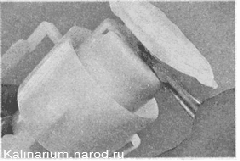

Топливный насос - заменаСовет Операция по замене насоса требует опыта и аккуратности (можно повредить элементы топливного модуля), поэтому в случае неисправности топливного насоса рекомендуется заменить топливный модуль в сборе. Для выполнения операции потребуется: фен (технический) или горячая вода. Снятие 1. Снимаем топливный модуль 2. Вынимаем насос из заборной камеры топливного модуля. Сетчатый фильтр удерживается стопорной пружинной шайбой на цилиндрическом выступе топливного насоса. 3. Снимаем сетчатый фильтр с патрубка электробензонасоса. При этом помогаем шлицевой отверткой с тонким лезвием, аккуратно смещая стопорную шайбу по приливу насоса. 4. Отжав фиксатор, вынимаем топливный насос из обоймы. 5. Поддев отверткой, снимаем хомут крепления трубки на патрубке электробензонасоса. 6. Феном разогреваем конец гофрированной трубки, надетой на патрубок электробензонасоса. Следите за температурой нагреваемых деталей не перегрейте насос и трубку 7. Снимаем гофрированную трубку с патрубка насоса. Установка Устанавливаем топливный модуль в обратной последовательности. При этом, надевая сетчатый фильтр, шлицевой отверткой с широким лезвием напрессовываем пружинную шайбу фильтра на выступ насоса. 
|